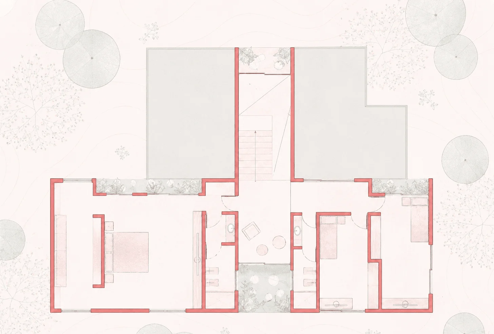
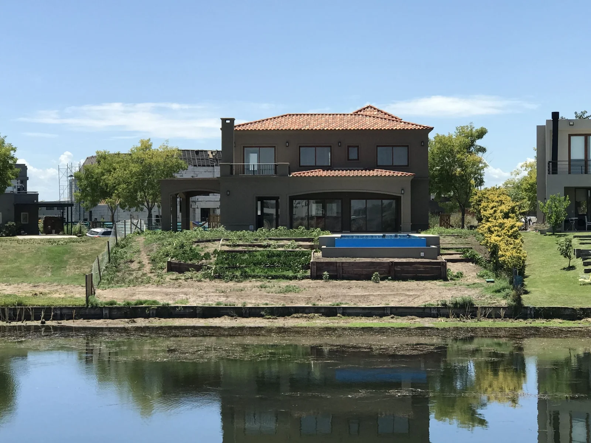
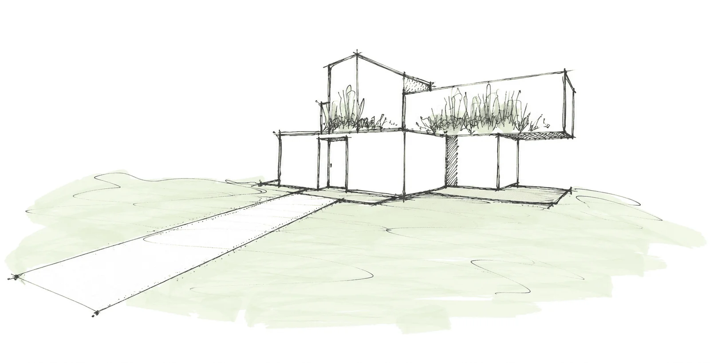

Arquitectura
Casas y remodelaciones diseñadas a medida, con foco en el uso consciente de los recursos y la luz natural.
Casas, remodelaciones, locales comerciales y paisajismo integral, pensados con materiales sustentables en cada etapa del proyecto.
No somos solo los de las plantas: también hacemos la obra. Arquitectura y paisajismo trabajan juntos desde el primer boceto.

Casas y remodelaciones diseñadas a medida, con foco en el uso consciente de los recursos y la luz natural.
Espacios comerciales pensados para funcionar bien y comunicar la identidad de cada marca.

Jardines, terrazas y patios diseñados por Martín, integrados a la arquitectura desde el primer día.
Elegimos materiales sustentables y soluciones que reducen el impacto ambiental de cada proyecto, sin resignar diseño ni calidez.
Priorizamos materiales de bajo impacto y proveedores locales siempre que es posible.
El jardín se piensa junto con la obra, no como un agregado de último momento.
Un equipo chico que acompaña de cerca cada proyecto, de principio a fin.

Nos contás tu idea, el terreno o el espacio, y qué estás buscando.
Desarrollamos la propuesta de arquitectura y/o paisajismo junto a vos.
Acompañamos la ejecución del proyecto de principio a fin.
Entregamos el espacio terminado, listo para disfrutar.
Con cita previa. Escribinos para coordinar un encuentro y conocer tu proyecto en detalle.
Es normal sentir dudas antes de empezar. Nuestro proceso arranca con una charla inicial donde escuchamos, explicamos y acompañamos, para que puedas decidir con claridad antes de avanzar.
Cada proyecto es un mundo: depende del terreno, la escala y el alcance del trabajo. Por eso no manejamos precios de referencia — en la charla inicial evaluamos tu caso puntual y te contamos cómo seguir.
Cada proyecto es único. En la etapa inicial definimos tiempos realistas para cada fase, desde el anteproyecto hasta la obra o la plantación.
No. Acompañamos y dirigimos el proceso para que puedas vivirlo con tranquilidad, sin tener que resolver cada detalle técnico.
Porque integramos arquitectura y paisajismo desde el inicio, con conciencia ambiental y materiales sustentables en cada decisión, y acompañamos todo el proceso con una mirada cercana y humana.